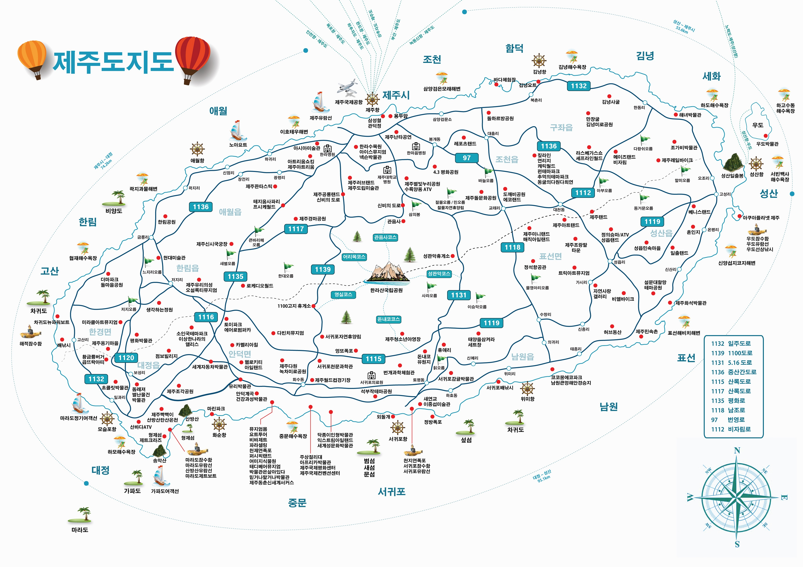

제주도는 신생대 제3기 말 플라이오세에 화산활동이 시작된 이후 제4기에 완성된 대륙붕 위의 화산도이다. 지질은 제3기 말에서 제4기까지 5회에 걸쳐 분출된 화산암류가 대부분이며, 퇴적암층이 부분적으로 협재한다. 화산암류는 주로 현무암에 속하며 조면암질안산암과 조면암도 소량 나타난다.
화산활동의 제1기는 기저현무암의 분출기이고, 제2기는 표선현무암의 분출과 서귀포 및 중문 조면암의 분출기이다. 제3기에는 중심분화가 진행되었으며, 제주현무암과 하효리현무암이 분출되었다. 제4기에는 시흥리·성판악·한라산 현무암이 분출되었다.